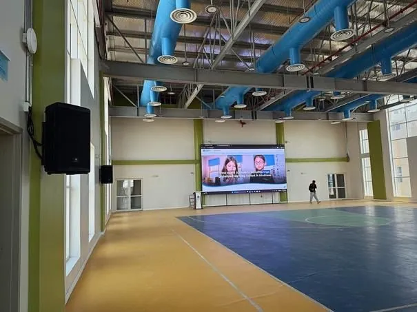

تقدّم داتاكور حلولًا سمعية وبصرية متكاملة للمسارح والقاعات في المملكة العربية السعودية، تجمع بين أنظمة الصوت والصورة والإضاءة والتحكم للعروض التقديمية والمؤتمرات والعروض الحية والدورات التدريبية والفعاليات الكبرى. وتوحّد حلولنا هذه التقنيات عبر تصميم منسّق للنظام وتركيب وتكامل وتشغيل، بما يدعم تشغيلًا موثوقًا للقاعة وتجارب جذابة للجمهور.

نبدأ من الموقع: مسح ميداني مقاس للمبنى، لا اختيار من كتالوج.
تصميم مبرَّر بمتطلبك التشغيلي وبالمعيار ذي الصلة.
كوادرنا تتولى التركيب ثم التشغيل بنتائج اختبار موثّقة.
تغطية مدعومة بزمن استجابة وزيارات وقائية مجدولة بعد التسليم.
تتطلب القاعات الحديثة أنظمة سمعية وبصرية منسّقة تحقق تواصلًا واضحًا وصورة عالية الجودة وأداءً موثوقًا في مختلف أنواع الفعاليات. وتصمّم داتاكور الأنظمة السمعية والبصرية للقاعات وتدمجها لصالح المؤسسات التعليمية والمرافق الحكومية والشركات ومراكز المؤتمرات والمسارح وأماكن الفعاليات. ويمكن لحلولنا أن تجمع بين الصوت الاحترافي وأنظمة العرض الضوئي وشاشات LED وتقنيات العرض التقديمي وإضاءة المسرح والتحكم المركزي والأتمتة السمعية البصرية. ويُصمَّم كل نظام وفق حجم القاعة وخصائصها الصوتية والغرض من استخدامها وسعة الجمهور والمتطلبات التشغيلية.
أنظمة الصوت الاحترافية: الصوت الواضح والمتّسق ضروري للقاعات المستخدمة في العروض التقديمية والمحاضرات والمؤتمرات والعروض الحية والفعاليات العامة. ويمكن أن تشمل حلولنا الصوتية الميكروفونات والسماعات ومضخّمات الصوت ومعالجة الإشارة الرقمية وغيرها من مكوّنات الصوت الاحترافية المصمّمة للقاعة.
شاشات LED وأنظمة العرض الضوئي: ندمج شاشات LED كبيرة الحجم وأنظمة العرض الضوئي والشاشات الاحترافية وتقنيات العرض التقديمي لتقديم محتوى مرئي واضح وجذاب للجمهور في أرجاء القاعة.
التحكم والأتمتة السمعية البصرية: يبسّط التحكم المركزي إدارة الصوت والفيديو والعروض التقديمية والإضاءة والتقنيات المتصلة، إذ تتيح أنظمة التحكم المتكاملة للمشغّلين إدارة مكوّنات متعددة عبر واجهات منسّقة وسيناريوهات تشغيل محدّدة مسبقًا.
أنظمة العرض التقديمي والتعاون: كثيرًا ما تستضيف القاعات عدة متحدثين ومصادر محتوى وأشكال عرض مختلفة، لذا ندمج تقنيات الاتصال والعرض التي تتيح للمستخدمين مشاركة المحتوى وإدارته بكفاءة خلال الاجتماعات والمحاضرات والمؤتمرات والفعاليات.
إضاءة المسرح والتكامل السمعي البصري: يمكن دمج الإضاءة مع الأنظمة السمعية والبصرية وأنظمة التحكم لدعم العروض التقديمية والعروض الحية والمؤتمرات وغيرها من متطلبات القاعة، ويساعد التحكم المنسّق المشغّلين على إدارة أنظمة متعددة من بيئة مركزية.
تطوّر داتاكور الحلول السمعية والبصرية وفق المتطلبات الخاصة بكل قاعة، ومنها: القاعات التعليمية وقاعات المحاضرات، والمرافق الحكومية والمؤسسية، وقاعات الشركات ومساحات المؤتمرات، ومراكز المؤتمرات وأماكن الفعاليات، والمسارح ومساحات العروض الحية، ومرافق التدريب والعرض.
وسواء كان المطلوب تركيبًا جديدًا أو ترقية لقاعة قائمة، يمكن تصميم النظام حول الاحتياجات التشغيلية الحالية مع إتاحة التوسع مستقبلًا.
لا يعتمد نجاح النظام السمعي البصري للقاعة على المعدات منفردة فحسب، بل يتطلب تخطيطًا دقيقًا وتكاملًا للأنظمة وتهيئة واختبارًا.
ويشمل نهجنا:
تقييم الموقع وتحليل المتطلبات: نقيّم القاعة والتطبيقات المقصودة ومتطلبات الجمهور والخصائص الصوتية والبنية التحتية القائمة والمتطلبات الفنية.
تصميم النظام: يطوّر فريقنا معمارية سمعية بصرية تغطي متطلبات الصوت والصورة والتحكم والعرض والاتصال.
اختيار المعدات: تُختار التقنيات والمعدات المناسبة وفق متطلبات الأداء والوظائف والتشغيل في القاعة.
التركيب والتكامل: تُركّب المعدات السمعية والبصرية والأنظمة الداعمة وتُدمج في حل منسّق.
البرمجة والتهيئة: تُهيّأ أنظمة التحكم وسيناريوهات الأتمتة والتقنيات المتصلة لتشغيل فعّال.
الاختبار والتشغيل: يُختبر النظام المكتمل ويُشغّل للتحقق من أدائه وضمان عمل مكوّناته المختلفة معًا كما هو مخطط.
الدعم الفني: يساعد الدعم الفني المستمر المؤسسات على الحفاظ على أداء موثوق للنظام وإدارة المتطلبات المستقبلية.
نفّذت داتاكور حلولًا سمعية وبصرية لبيئات تتطلب تقنيات متكاملة للصوت والصورة والعرض والتحكم.
وتشمل خبرتنا تنفيذ أنظمة القاعات والأنظمة السمعية والبصرية للمؤسسات التعليمية والمنشآت المؤسسية وغيرها من البيئات المهنية في المملكة العربية السعودية.
ينبغي أن يكون النظام السمعي البصري المصمّم جيدًا للقاعة سهل التشغيل، وقابلًا للتكيّف مع المتطلبات المتغيرة، وقادرًا على دعم أنواع مختلفة من الفعاليات.
وتركّز داتاكور على دمج المكوّنات الرئيسية للبيئة السمعية والبصرية في نظام منسّق بدلًا من التعامل مع الصوت والفيديو والإضاءة والتحكم كتقنيات منفصلة. ويمكن لهذا النهج أن يبسّط التشغيل ويحسّن اتساق النظام ويوفّر أساسًا للترقيات المستقبلية.
وقد صُمّمت حلولنا لدعم: صوت واضح ومتّسق، وعرض مرئي عالي الجودة، وتحكم مركزي بالنظام، وتشغيل فعّال للقاعة، ومتطلبات عرض مرنة، وبنية تحتية سمعية بصرية قابلة للتوسع، وترقيات تقنية مستقبلية.
نصمّم أنظمة AV-over-IP بصوت Dante وتحكّم مبرمج للمسارح والفصول وقاعات المجالس.
نعم: مسارح وفصول ذكية وصوت احترافي وأنظمة ترجمة فورية، من بين غيرها.
نعم: التصميم والتركيب والتشغيل وبرمجة التحكم يُنفّذها مهندسونا.
شارك جدول الكميات أو جدول المواد أو المخططات وسنعود إليك بنطاق مسعّر وبرنامج زمني. وإن كنت في مرحلة أبكر، فسنقوم بزيارة ومسح للموقع.